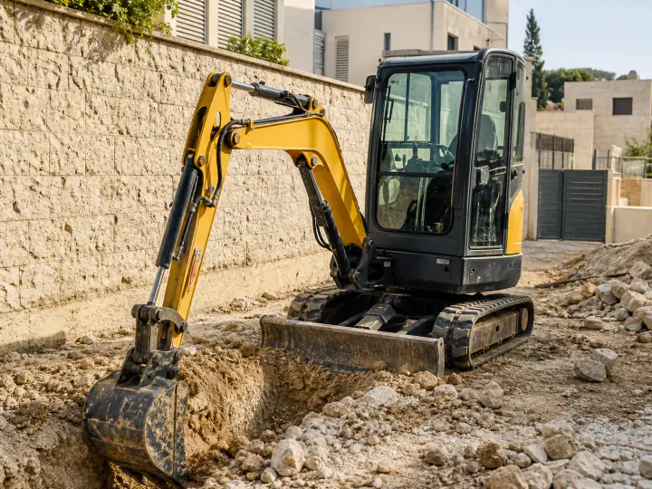
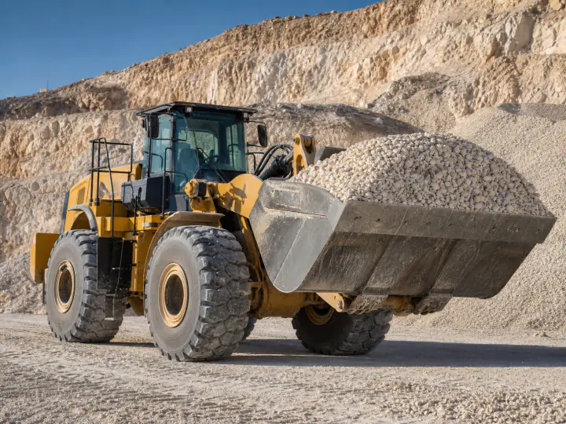
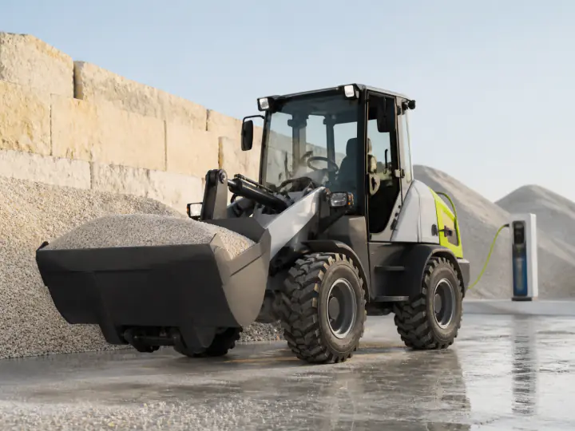

NICOSAIL OKW18
- קיבולת כף
- 0.04 m³
- עומק חפירה מרבי
- 1,900 mm
קטלוג ציוד · מסמכי מקור נוספים
דגמים ומשפחות ציוד מתוך המסמכים שסופקו לליפט פרו 26. נתוני המפתח מוצגים כאן בעברית; קובצי המפרט הטכני זמינים לצד כל משפחה. התאמה, תצורה וזמינות נבדקות מול החברה לפני הזמנה.
← חזרה ל־22 דפי הדגמים המפורטים01 / עבודות עפר
הדגם OKW18 מופיע במפרט עצמאי. שמות הדגמים האחרים מופיעים בהצעת ספק; מפרט טכני מלא שלהם טרם צורף לקטלוג.

נתוני המפרט שלהם דורשים אימות מול מסמך דגם ייעודי. ההצעה המסחרית אינה קובץ ציבורי.
הדגמים OKW30, OKW30U, OKW35, OKW40U, OKW913 ו־OKW925 כבר מופיעים בקטלוג הדגמים המפורטים, ולכן אינם מופיעים שוב כאן.
02 / העמסה
שני דגמי ZL שונים מה־LOVOL FL918 שמופיע בקטלוג הראשי. קוד דגם, ספק ותצורת כלי הם הבסיס להשוואה.

מעמיס הידרוסטטי טלסקופי.
מעמיס אופני המופיע בהצעת ספק SICH.
03 / עבודה במרחב מוגבל
שבעה דגמים מתוך טבלת התצורות של NICOSAIL. המספרים הם נתוני המסמך לכל דגם, לא הבטחה לתצורה מסוימת.
04 / שינוע ולוגיסטיקה
ארבעה דגמים בטבלת היצרן. יכולת ההרמה הנקובה משתנה לפי הדגם.

05 / הידוק ותשתיות
חמישה עשר דגמים בקטלוג NICOSAIL. משקל העבודה להלן הוא נתון ההשוואה הראשוני; מידות תוף, מנוע ותצורה מפורטים במסמך.
משקל עבודה 350 kg
משקל עבודה 550 kg
משקל עבודה 380 kg
משקל עבודה 600 kg
משקל עבודה 1,000 kg
משקל עבודה 1,200 kg
משקל עבודה 1,500 kg
משקל עבודה 1,800 kg
משקל עבודה 1,860 kg
משקל עבודה 2,060 kg
משקל עבודה 2,800 kg
משקל עבודה 6,000 kg
משקל עבודה 7,000 kg
משקל עבודה 8,000 kg
משקל עבודה 9,000 kg
06 / כלים קומפקטיים
כלים נוספים המופיעים במסמכים שסופקו. מפרטים עשויים להשתנות לפי תצורת המנוע והאביזרים.
המסמך כולל גם גרסת הרמה; שערו מציג “300 KG” בעוד טבלאות הביצועים מציינות 500 ק״ג. יש לאמת את הדגם המדויק.
טבלאות הביצועים · PDFמכסחת זחלית בשלט רחוק.
מכסחת זחלית בשלט רחוק.
מפרט יצרן · PDFמכסחת זחלית בשלט רחוק.
מפרט יצרן · PDFמכסחת זחלית בשלט רחוק.
07 / הרחבת שימושים
קטלוג האביזרים מפרט גרסאות ומידות רבות. חלק מהשמות מופיעים יותר מפעם אחת כתצורות שונות, ולכן אין כאן ספירה של 84 דגמים ייחודיים.